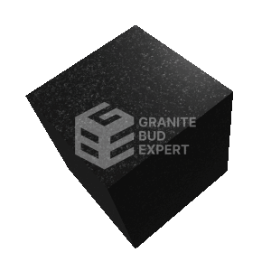
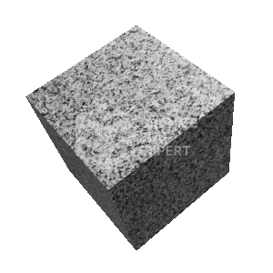
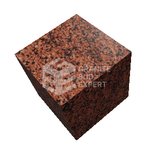
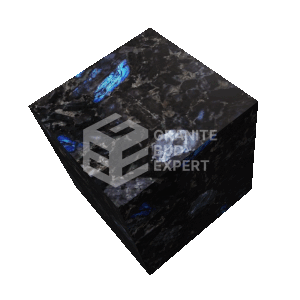
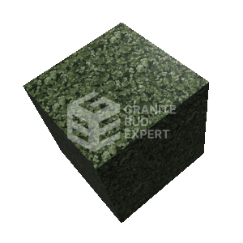

Каталог каменю

Габбро
Міцний та елегантний будівельний матеріал з глибокими темно-сірими відтінками, пронизаний блискучими кристалами. Його унікальна текстура та видатні технічні характеристики роблять його ідеальним для створення вишуканих поверхонь в інтер'єрах та зовнішніх облицювань.
Детально

Покостівський
Природна порода, що здобула свою унікальну текстуру від вітру та води. З неправильними виїмками та глибокими рельєфами, вона створює естетично привабливу, природну поверхню, в якій відчувається часова витримка.
Детально

Лезниківський
Яскравий камінь, відзначений багатим червоним відтінком, який зберігає енергію глибини землі. Текстура каменю вражає своєрідністю та витонченістю, надаючи поверхні ексклюзивний вигляд.
Детально

Лабрадорит
Лабрадорит вражає своїм відтінком від блакитного до зеленого, створюючи враження таємничості. Відомий своєю здатністю стимулювати інтуїцію та забезпечувати внутрішній спокій.
Детально

Маславский
Непередавана зелена краса, що переливається від глибокого смарагдового до темно-зеленого. Текстура граніту виткана невловимими візерунками, створюючи враження живого лісу в камені. Сполучаючи витонченість з силою, цей граніт стає природним шедевром.
Детально